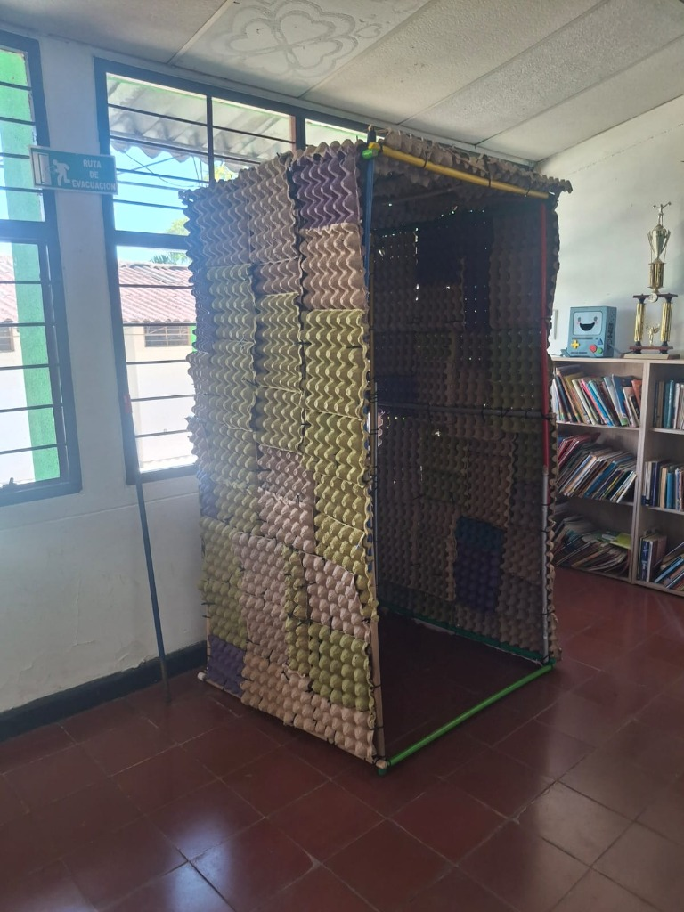
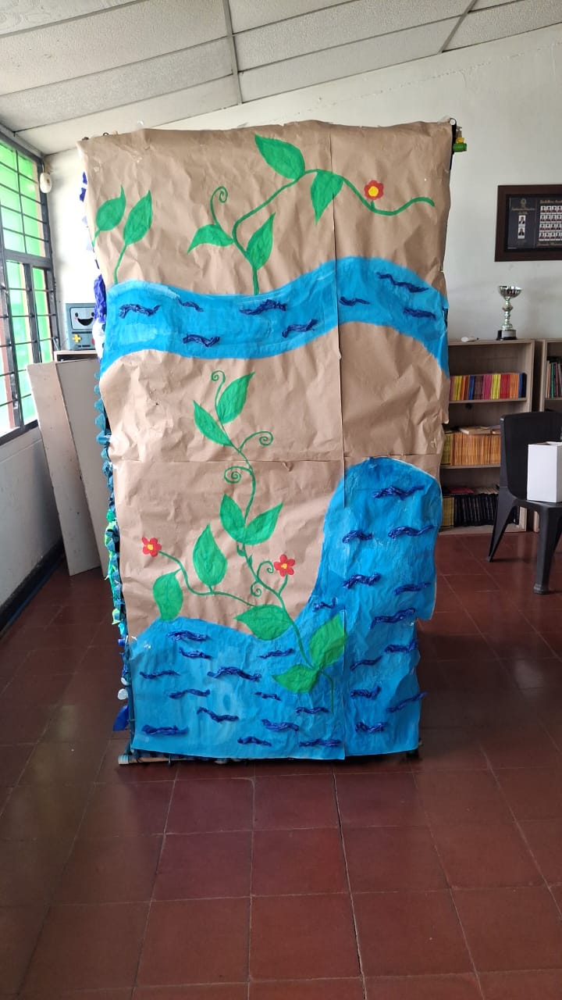

Materiales con otra vida
La construcción explora paneles de cartón reutilizado y papel kraft: una alternativa ligera que invita a pensar en el impacto ambiental desde el diseño.
UN ESPACIO PARA HACER UNA PAUSA
La cabina L.U.Z. propone un espacio íntimo donde detenerse, expresar lo que se siente y recibir una primera orientación. Su diseño busca cuidar la privacidad sin perder de vista la sostenibilidad y la facilidad de uso.
Conoce el acompañamiento
DISEÑADA CON INTENCIÓN
La propuesta combina un entorno resguardado, materiales reutilizados y un diseño pensado para hacer más accesible el primer paso hacia la ayuda.
La construcción explora paneles de cartón reutilizado y papel kraft: una alternativa ligera que invita a pensar en el impacto ambiental desde el diseño.
El revestimiento interior con textura acústica busca amortiguar el ruido exterior y ayudar a que cada persona se sienta más cómoda al conversar.
El proyecto se construye de forma colaborativa, probando ideas y aprendiendo en cada etapa para mejorar la experiencia y la viabilidad de la propuesta.
ASÍ VA TOMANDO FORMA

